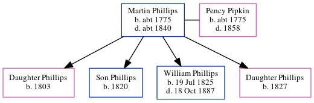

Martin Phillips c1775 - c1840
[ Home ] | [ Calendar ] | [ Surnames Index ] | [ Census Index ] | [ Family History ]Martin Phillips, the 3 times great-grandfather of Michele Copp (née Phillips), was born in possibly England c. 17751 and had 4 children with Pency Patrick Pipkin: daughter, Son, William Hiram and daughter. In 1820, he was living in Sumter, Sumter, South Carolina2.
He died c. 1840 in Sumter, Sumter, South Carolina, USA1.
Children
- daughter was born in 1803
- Son was born in 1820
- William Hiram was born on Jul 19, 1825
- daughter was born in 1827
Citations
- OneWorldTree Online publication - Provo, UT, USA: MyFamily.com, Inc.
- 1820 United States Federal Census Online publication - Provo, UT, USA: The Generations Network, Inc., 2004.Original data - United States of America, Bureau of the Census. Fourth Census of the United States, 1820. Washington, D.C.: National Archives and Records Administration, 1820. M33, 14
Family Tree
Generated by ged2site. Last updated on Jun 6, 2024